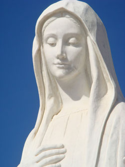

I Messaggi
Secondo l'unanime testimonianza dei veggenti, la Vergine durante le Sue apparizioni, ha dato determinati messaggi affinchè essi li riferissero all'umanità. Sebbene i messaggi siano stati molti, è possibile ricondurli a cinque messaggi fondamentali poichè tutti gli altri rappresentano o fanno da supporto a questi cinque.
-
MESSAGGI GENERICI
Pace
Fede
Conversione
Preghiera
Diggiuno
Già il terzo giorno la Madonna ha esposto come primo dei suoi messaggi: "Pace, pace, pace e solo pace!" ed ha ripetuto due volte: "La pace deve regnare tra Dio e gli uomini ed in mezzo agli uomini!" Considerando il fatto che la veggente Marija ha visto la croce dietro la Madonna mentre esprimeva questo messaggio, ciò vuol dire chiaramente che questa pace può venire solo da Dio che per mezzo della Vergine in Cristo è divenuto "nostra pace" (Efesini 2,14),
"La pace non come la dà il mondo" (Giovanni 14,27) e per questo Cristo ha comandato ai Suoi apostoli di portarla al mondo (Matteo 10,11 ) così che tutti gli uomini possano diventare "figli della pace" (Luca 10,6). Quindi anche la Vergine, in quanto "Regina degli Apostoli" , viene presentata a Medjugorje come la vera "Regina della Pace". Nessun'altro sa, come Lei o meglio di Lei, convincere il mondo attuale che si trova ad affrontare problemi di distruzione del fatto che la pace sia il bene più grande e più prezioso.
Il secondo messaggio della Vergine è quello della fede. La Vergine ne ha parlato già al quarto, quinto e sesto giorno delle apparizioni e questo è comprensibile. Cioè senza la fede non è possibile trovare la pace. Pertanto la fede è la risposta alla parola di Dio nella quale Egli non solo si manifesta, ma si dona agli uomini. Nella fede l'uomo riceve la parola di Dio che in Cristo è divenuto "nostra pace" (Efesini 2,14). Accogliendola l'uomo diventa un uomo nuovo, con una vita nuova in Cristo e partecipe della natura di Dio (Efesini 2,18). Così l'uomo ottiene la pace, sia verso Dio, sia verso gli uomini.
Nessuno quindi conosce come la Madonna il valore della fede e quanto essa sia importante per l'uomo di oggi. Per questo motivo Ella la mette sempre in evidenza ai veggenti e chiede loro di donarla agli altri. Lei la antepone a tutto quello che gli uomini cercano e la considera la condizione primaria per poter soddisfare tutte le richieste, desideri e preghiere che si riferiscono alla salute ed a qualsiasi altro bisogno umano.
Anche la conversione è uno dei messaggi più frequenti della Vergine poichè nell'uomo di oggi la fede è debole o del tutto assente e senza la conversione non è possibile ottenere la pace. La vera conversione vuol dire "lavare il cuore" (Geremia 4,14) poichè un cuore corrotto crea e favorisce una struttura e dei rapporti sociali insoddisfacenti, leggi ingiuste e organizzazioni servili.
Senza una radicale trasformazione nel cuore ed una sua conversione, la pace non è possibile. Ecco perchè la Madonna raccomanda una frequente confessione. Questa richiesta è rivolta indistintamente a tutti gli uomini poichè "non esiste giusto, neppure uno...tutti furono fuorviati, tutti si sono corrotti" (Romani 3,11-12).

A partire dal quinto giorno delle apparizioni e quasi quotidianamente la Vergine raccomanda la preghiera. Ella chiede a tutti gli uomini di pregare incessantemente, proprio come Cristo aveva chiesto (Marco 9,29; Matteo 8,38; Luca 11,5-13...). La preghiera quindi sprona e rafforza la fede dell'uomo, senza la quale non vi sono dei rapporti regolari nè con Dio, nè con gli altri. Inoltre con la preghiera l'uomo manifesta il suo legame vitale con Dio: Lo riconosce, Lo ringrazia per i doni ricevuti e con fiducia si aspetta tutte le altre cose di cui ha bisogno, in modo particolare la salvezza. La preghiera rinsalda questo atteggiamento dell'uomo e lo aiuta ad instaurare un rapporto regolare con Dio poichè senza questo rapporto non è possibile conservare e promuovere la pace con se stessi e con gli altri.

La fondatezza della preghiera è particolarmente evidente poichè la Parola di Dio è rivolta all'uomo e l'uomo risponde ad essa con le parole. La risposta è una fede espressa o appunto una preghiera che rinsalda, rinnova, promuove e sostiene la preghiera stessa. Inoltre con la preghiera l'uomo annuncia Dio ed il Vangelo ed accende la fede negli altri.
Già dal sesto giorno delle apparizioni la Vergine ha frequentemente raccomandato il digiuno che è al servizio della fede. In questo modo l'uomo verifica, rinsalda ed assicura il proprio controllo di sè. Solo l'uomo che riesce a dominarsi può essere libero e pronto a mettersi al servizio di Dio e del prossimo, come la fede vuole. Il digiuno garantisce all'uomo che il suo abbandonarsi alla fede sia sincero e sicuro. Il digiuno aiuta l'uomo a liberarsi da qualunque schiavitù ed innanzitutto dal peccato. Chi non appartiene a se stesso è uno schiavo. Quindi il digiuno aiuta l'uomo a frenare i suoi desideri che facilmente lo condurrebbero a sprecare in modo avventato dei beni di cui altri avrebbero bisogno per la mera sopravvivenza.
Con il digiuno è possibile ottenere dei beni che consentono di dimostrare il proprio amore ai poveri e ai miseri ed almeno in
parte colmare le differenze esistenti tra
loro ed i ricchi. Il digiuno cura la povertà degli uni con l'abbondanza e quella degli altri con la povertà stessa. In questo modo si crea quella pace che oggi è in particolar modo minacciata dalle enormi differenze tra ricchi e poveri (nord e sud). Dai messaggi della Vergine si evince chiaramente che la pace è il bene più prezioso e che la fede, la conversione, la preghiera ed il digiuno sono le uniche condizioni per poterla ottenere.
-
MESSAGGI SPECIALI
Abbiamo detto che, oltre ai cinque messaggi che sin dall'inizio la Vergine ha consegnato a tutto il mondo, Ella ha iniziato, dall'1 marzo 1984, ogni mercoledi e tramite Marija Pavlović, a consegnare altri messaggi per la parrocchia di Medjugorje e per i pellegrini che si recano a Medjugorje. La Madonna quindi ha scelto non solo i veggenti, ma anche tutta la parrocchia ed i pellegrini come Suoi testimoni e collaboratori. Tutto questo è evidente nel Suo primo messaggio, in cui dice: "Io ho appositamente scelto questa parrocchia ed intendo guidarla". Ha confermato tutto questo in un'altra occasione dicendo: " Ho scelto in modo particolare questa parrocchia che mi è più cara delle altre e vi ho dimorato con piacere quando l'Altissimo mi ha mandata" (21 marzo 1985). La Madonna ha fornito anche una motivazione per questa scelta: "Tornate alla parrocchia, questo è il mio desiderio. Così che possano farlo anche tutti coloro che vengono qui" (8 marzo 1984). "Vi prego, tutti voi che appartenente a questa parrocchia, v ivete i miei messaggi" (16 agosto 1984) . E' necessario che innanzitutto i parrocchiani ed i pellegrini divengano testimoni delle Sue apparizioni e dei Suoi messaggi così che poi, insieme ai veggenti, possano realizzare i Suoi piani di conversione del mondo e riconciliazione con Dio.
La Vergine conosce bene la natura e la debolezza dei parrocchiani e dei pellegrini con i quali intende collaborare per la redenzione del mondo ed è certa che tutto questo richieda una forza soprannaturale. Ed è per questo motivo che li rivolge e li conduce alla sorgente di questa forza. La prima sorgente è la preghiera. In quasi tutti i suoi moniti, Ella la raccomanda vivamente. Tra le preghiere mette particolarmente in evidenza la S. Messa (7 marzo 1985, 16 maggio 1985), una costante devozione al Santissimo Sacramento dell'Altare (15 marzo 1984), allo Spirito Santo (2 giugno 1984, 9 giugno 1984, 11 aprile 1985, 9 maggio 1985, 16 maggio 1985, 23 maggio 1985...) e la lettura delle Sacre Scritture (8 ottobre 1984, 14 febbraio 1985 ). Con questi messaggi speciali rivolti alla parrocchia di Medjugorje ed ai pellegrini la Vergine desidera approfondire e rendere più comprensibili per tutti i primi messaggi che ha inviato al mondo.
Dal 25 gennaio 1987 la Vergine invia i Suoi messaggi il 25 di ogni mese tramite la veggente Marija Pavlović. Tutto questo continua ancora oggi.
Copyright © CruzJurado, 2013